Political Subreddits are Biased
tl;dr Using natual language processing, I assessed the bias of the top 9 most popular political subreddits on the popular internet forum site, Reddit.
r/Republican and r/Conservative like talking about liberal people and illegals, while r/politics likes talking about Republicans, Sanders, and Trump.
An analysis by Bennett Mountain for CS145: Data Mining, taught by Professor Mike Izbicki.
Introduction
Political subreddits mostly serve the purpose as an aggregate of news articles. Someone posts an article,
some users upvote and downvote the article, and others participate in the discussion of the article by commenting on
it. As it stands, accurately gaguing the political bias of even a news article is an extremely complex and
challenging problem that PhDs are working on. Since political subreddits are essentially article aggregate sites,
accurately gauging the political bias of a subreddit is even more difficult. To work around this almost intractable
problem, I developed my own metric for a subreddit's bias based on the title of each post (which almost always is the
title of an article) and the post's score. The list of subreddits considered in this analysis were: politics,
uspolitics, AmericanPolitics, progressive, democrats, Liberal, Republican, Conservative, and Libertarian.
image source: Data Incubator
Overview
For my analysis, I needed to find a way to quantify the bias of a subreddit. No such way to do this currently exists, so a large problem
was coming up with my own metric that I would use. Since using the actual contents of each post (which again, on political subreddits, are mostly articles!) was out
of the question, all that I realistically had to work
with were the titles of the posts/articles. With the title of the post, I utilized the commonly used natural language process python library TextBlob.
 image source: TextBlob
image source: TextBlob
When given a piece
or "blob" of text, TextBlob outputs two main features: the polarity and the subjectivity. Polarity is a measure from -1 to +1 where a negative score means that
the blob is completely negative, and +1 means that the blob is completely positive. Subjectivity is a measure from 0 to +1, where 0 means that the blob is completely
objective and 1 meaning that the text is completely subjective. For example, the blob "I hate the cold weather" has a polarity of -0.7 and a subjectivity of 0.95,
while the blob "there are 365 days in the year" has a polarity of 0 and subjectivity of 0.
I'll spare the exact technical details, but using each word in the title/post, I determined whether a post was about a left-leaning, right-leaning, or
neutral topic. Using the polarity, subjectivity, score of the post, and my determination of leaning of the topic of the post, I quantified the political bias of a
subreddit for that one post. By taking into account all posts, I found a way to quantify the political bias of an entire subreddit as either right-leaning,
left-leaning, or truly neutral.
All that you need to know moving forward though, is that for my metric I made the decision to have a negative score mean that a subreddit is right-leaning, a positive score
to mean that a subreddit
is left-leaning, and a score of 0 to mean that a subreddit is perfectly objective. Though there's no perfect way to intrepret what the scores actually mean,
knowing that a negative score corresponds to my algorithm thinking that a subreddit is right-leaning and a positive score corresponding to my algorithm thinking
that a subreddit is left-leaning is sufficient to understand this analysis.
Initial Hypotheses
By virtue of Reddit being one of the most popular sites on the web, it is generally believed that Reddit as a whole is left leaning. It is also generally
believed that r/politics, the largest of the political subreddits, which claims to be accepting of any and all beliefs, is left-leaning. Moreso, one would expect
subreddits that are defined by their affiliations like r/Conservative and r/Republican to be right-leaning, and by the same token, r/democrats and r/Liberal to be
left-leaning.
Most political subreddits are biased in some way
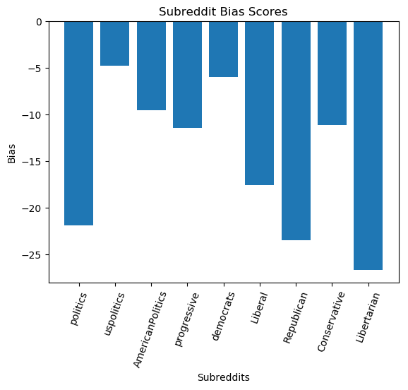
First note that the y-axis is mostly meaningless. Secondly, every subreddit is right-leaning? Probably not the case.
This plot shows the aggregated political bias (according to my metric) over the entirety of the data I considered, which was the months of January from 2011 to 2019.
Interestingly, my metric shows that each subreddit I looked at is right leaning. According to my metric the top two most right-leaning subreddits are Libertarian and
Republican. Unfortunately though, it does show that r/politics is the third most right-leaning subreddit and Liberal is the 5th most right-leaning, while what one might
think would be in the top 3 of most right-leaning, r/Conservative comes in at the 6th spot overall.
Political Bias Score Over Time
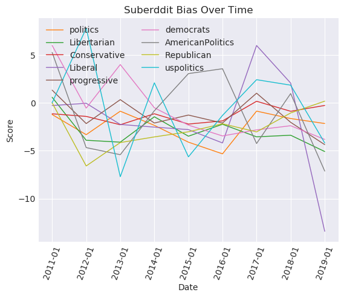
This plot shows how the political bias of each subreddit (according to my metric) has evolved over time.
This time series shows that according to my metric, the political bias of the political bias is quite sporadic. The subreddits, as best illustrated by uspolitics
jump around between being left-leaning during the month of January for one year, the right-leaning for the month of January in the next year. It's interesting to
note here that the behavior subreddits tend to me more sporadic than the likes of the more popular subreddits like politics or Conservative. Though overall, This
plot doesn't actually tell much besides subreddits leanings' could be sporadic, there are some glimpses of hope: in 2017, Liberal has a score that is fairly positive,
along with democrats in 2011 and 2013, Conservative and Libertarian start out as right-leaning and stays that way for the most part.
What Words are Associated with Each Subreddit? An Unsupervised Topic Analysis
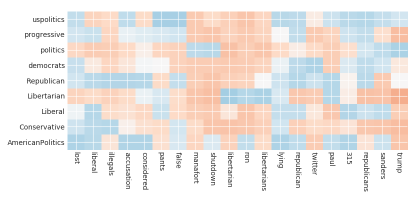
Unsupervised topic analysis is an extremely complicated method of finding out which topics are most associated with which labels. For this, I adapted the code
from my professor, Mike Izbicki, which used logistic regression with L-1 regularization.
An unsupervised topic analysis such as this seeks to find the "most post about" topics on each subreddit. On the y-axis is each subreddit, while on the x-axis
is the 20 most significant topics. Each 4x4 box (where each mini-box is the same color) is blue if a topic is heavily associated with it's corresponding subreddit
on the y axis, is white if there is no association, and is red if the subreddit almost never has posts about that topic. Most interestingly, we see that r/Republican
is heavily associated with the topics of "liberals," "illegals," "accusation," and "republican." We can see that r/Conservative is also heavily associated with "liberal,"
"illegals," "false," and "lying." We also interestingly see that AmericanPolitics, Conservative, Liberal, and progressive are not associated with "trump," whereas
uspolitics and politics really like talking about "trump." We also see that politics likes talking about "manafort" and "shutdown" while nearly every other subreddit does
not. Another interesting note is that the only subreddits that are heavily associated with "sanders" are AmericanPolitics, Liberal, democrats, politics, and uspolitics,
but not progressive.
A Deeper Look Into r/politics
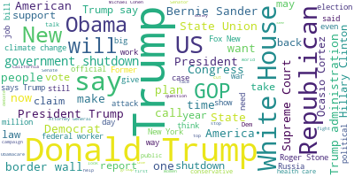
Since my metric's score for politics didn't line up with my (and much of Reddit's) hypothesis that politics is left-leaning, it's worthwhile to look at what the most
commonly posted about topics are.
Visualizing the most common words posted on r/politics using a wordcloud, we unsurprisingly see Trump at the forefront of the
popularity contest. His various forms of "Trump, "Donald Trump," and "President Trump" are quite well represented here.
Looking deeper, we see words and phrases like "Republican," "Obama," "Supreme Court," and "Democrat" are fairly popular as well.
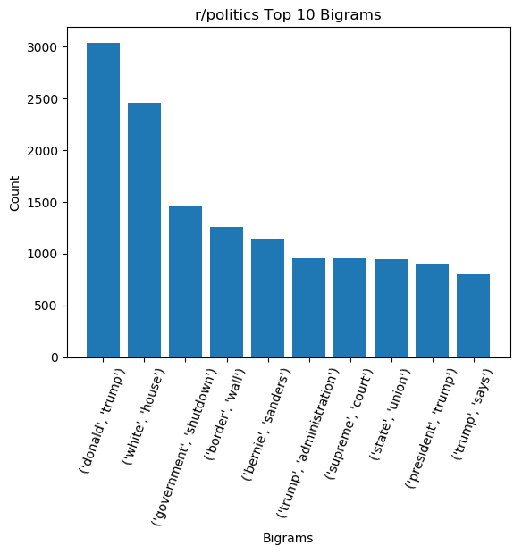
A bigram is a string of two adjacent words. The top 10 most common bigrams confirm the overwhelming popularity of Trump and the White House, with those topics taking
4 out of the top 10 spots.
A Deeper Look Into r/Conservatives
In contrast, let's take a look at what r/Conservatives like to post about.
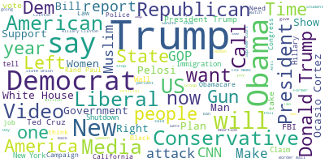
For some context, as of November 2019, r/Conservatives is the third most popular political subreddit by subcribers to r/politics,
while r/Libertarians is the second most popular by subscribers.
We see that instead of being coompletely dominated by versions of "Donald Trump" and "white house", r/Conservatives posts
are more diverse. There's a strong presence of "Obama," "conservative," "democrat," "liberal," "left," and interestingly, "gun."
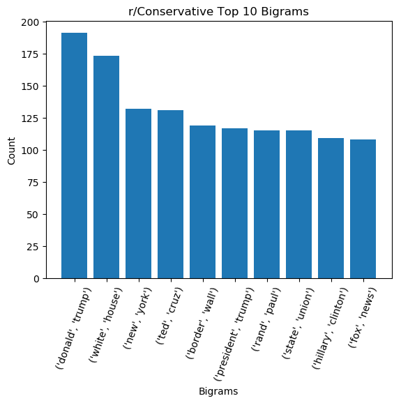
From the top 10 bigrams, we see that, again, Trump dominates. But, we see that 'ted cruz' and 'border wall' occur a decent amount as well.
Conclusion
It should be pretty clear by now that my metric didn't do a great job at gauging the politcal bias of the political subreddits. Though it's not completely usesless
and showed glimpses of hope, it needs some work for sure. Maybe that's why nobody else, except a few academics and hopefully large companies with seemingly infinite
resources like Facebook and Google, are working on it.
Quantifying political bias is a really difficult problem, and my naive approach certainly wasn't the best way to go about trying to uncover it. But, this moreso points
to the qustion of whether approaching the challenge of assessing political bias from a quantitative stance is even the right way to go about it. Though theoretically
we should be able to use a number to assess political bias, in practice, who knows if that's the best way to go about it. The unsupervised topic analysis, which in
my opinion gave the best representation of the differences between the posting environments of the political subreddits, though did use complicated numerical methods,
gave an output that was almost purely qualitative. Though my metric gave r/Conservative and r/politics a similar bias score, these bigrams, the wordclouds, and the
unsupervised topic analysis were best able to highlight the differences between each subreddit.
Appendix: Time Periods Considered
To reduce the runtime but still get a good sense of how the political subreddits have changed over the years, I only looked at the posts in the month of January
from the years 2011-2019.
Appendix: Methodology
As mentioned in the introduciton, I had to create my own metric to gague the political bias of the subreddit. Here's how:
For each post with a score of 10 or over, take the log of the score, then normalize the score by the number of posts in that given time period. Count
the number of words in the title that are in my
set of "conservative words" and the number of words that are in my set of "liberal words". If there are more conservative words than liberal words,
the article is probably about a conservative topic, so multiply it by -1 (I wanted conservative to be negative, and liberal positive).
If not, leave the score as is. If the title is subjective, multiply the score by 50 (giving the post a weight of at least 5x since the min subjectivity
score is 0.1). Finally, multiply by the polarity, and
Doing this let my metric define negative sentiment towards a conservative topic as "left leaning" (overall score > 0), and positive sentiment towards a
liberal topic also be "left leaning," and so on.
Appendix: My Metric Was Trash, but Why?
I've done some thinking about why, after multiple iterations, my metric is still trash. The easy answer is that I'm an undergrad who's working on a super-challenging
problem and is ill-equipped to handle it. But, that's a cop out.
If I were to stick with my current methodology, I think the main issue lies in my sets of conservative and liberal words. Since I couldn't find sets of traditional
"conservative" and "liberal" words, I had to come up with my own sets. I didn't spend a whole lot of time doing so, and the accuracy of my metric is paying for it.
If I were to guess, each subreddit has a negative score because of my inclusion of "Trump" in my set of conservative words. Nowadays, numerous article titles From
mainstream news sources are of the form "Trump did x, y or z." Since my sets of words are extremely small, my "algorithm" automatically gave this a negative score.
If the sentiment was even slightly positive, and the article was subjective, the post automatically received a negative score. Since TextBlob itself can't assess
leaning, if it assigned a positive sentiment to an article title of that form, and the left-leaning members of r/politics (of which there's probably a majority of them)
upvoted the post, r/politics, for my metric, gets a negative score. Though taking a the log of the scores does help in normalizing them somewhat, at the end of the day a
negative score is still a negative score, and the aggregation of tens or hundreds of thousands of posts in a month can add up.
Appendix: The sets of "left-leaning" and "right leaning" topics
"Left-leaning" Topics
"progressive","Biden","universal basic income","AOC", "Ocasio-Cortez", "liberal", "democrat", "Obama", "Clinton", "Sanders",
"green new deal", "leftist", "Yang", "Warren", "Kamala", "medicare for all"
"Right-leaning" Topics
Conservative words: "Cheney","Shapiro","Koch","Paul Ryan","Rand Paul","Bush","Palin","Mattis","McCain","Romney", "Trump",
"Cruz", "republican", "Kushner", "conservative", "GOP", "Pence"
Appendix: The rest of the wordclouds
Wordclouds are fun, aren't they!
AmericanPolitics
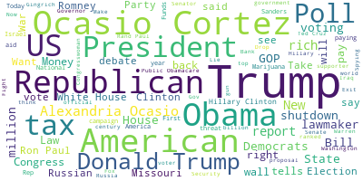
Liberal
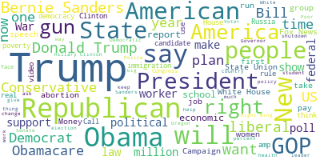
Progressive
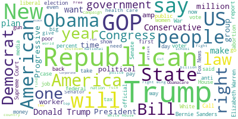
Republican
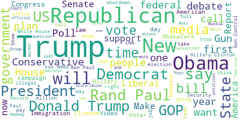
uspolitics
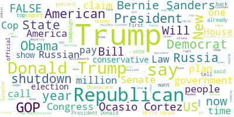
Appendix: The rest of the bigrams
I thought these would be helpful for the analysis, but the unsupervised topic analysis took the cake.
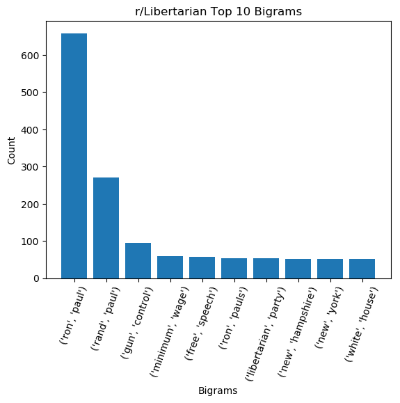
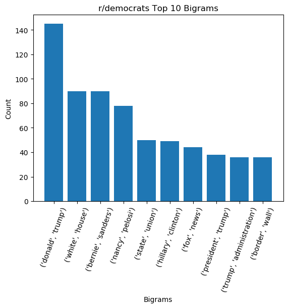
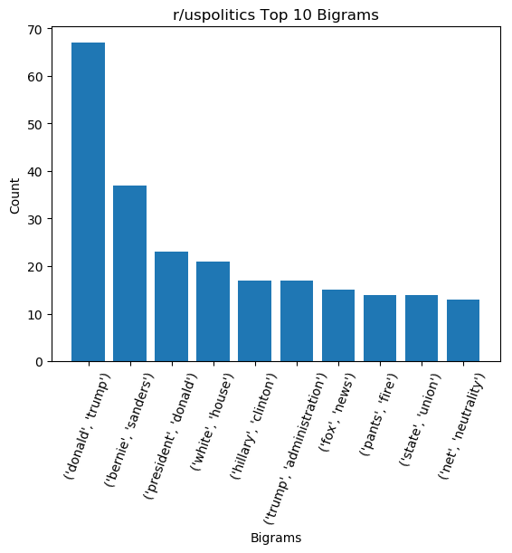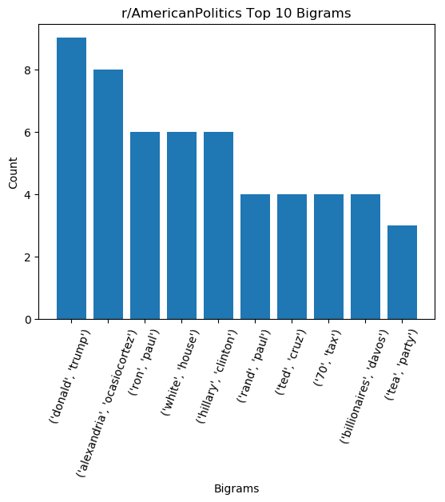
Sources
Reddit political image from https://blog.thedataincubator.com/2018/06/a-study-of-reddit-politics/
Textblob image from https://textblob.readthedocs.io/en/dev/